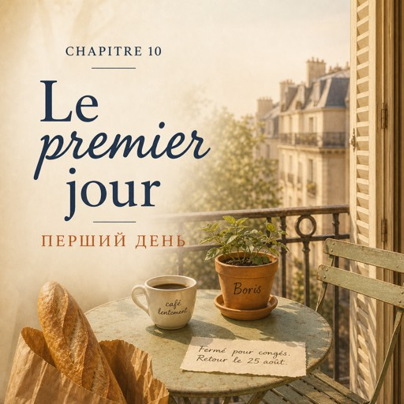

Le lundi 15 septembre — понеділок, 15 вересня
Huit heures et quart. La rue de Bretagne sent le café et le carton mouillé.
Чверть на дев'яту. Вулиця Бретань пахне кавою й мокрим картоном.
Solange ouvre le rideau de fer. Dedans, il fait froid.
Соланж піднімає залізну ролету. Усередині холодно.
— Bonjour, madame.
— Добрий день, пані.
— Bonjour. Ici, c'est Solange. « Madame », c'est pour les clients.
— Добрий день. Тут я Соланж. «Пані» — це для клієнтів.
Elle sort un tablier vert et le donne à Natalia.
Вона дістає зелений фартух і віддає його Наталі.
— Il est un peu grand.
— Він трохи завеликий.
— Il est très grand. Faites deux fois le tour.
— Він дуже завеликий. Обкрутіть двічі.
Natalia fait deux fois le tour. Ça tient.
Наталя обкручує двічі. Тримається.
À huit heures vingt-deux, un garçon entre, un écouteur dans l'oreille.
О восьмій двадцять дві заходить хлопець, один навушник у вусі.
— Wesh ! C'est toi, la nouvelle ?
— Вешь! Це ти новенька?
— ... Pardon ?
— …Перепрошую?
— « Wesh », ça veut dire « salut ». Moi c'est Karim.
— «Вешь» означає «привіт». Я Карім.
Vingt-six ans, sept minutes de retard.
Двадцять шість років, сім хвилин запізнення.
Depuis quatre ans, tout le monde lui parle doucement. Lui, non.
Чотири роки всі говорять із нею повільно. Він — ні.
C'est bizarre, et c'est agréable.
Це дивно — і це приємно.
— Bon. Les seaux, ici. Les rubans, là.
— Так. Відра — тут. Стрічки — там.
— Ça, c'est la réserve. Et ça, c'est la chambre froide.
— Оце — підсобка. А оце — холодильна камера.
— N'y reste pas trois heures, tu vas geler.
— Не сиди там три години, замерзнеш.
Natalia répète dans sa tête : la réserve, la chambre froide, la caisse.
Наталя повторює подумки: підсобка, холодильна камера, каса.
Solange arrive avec un seau.
Підходить Соланж із відром.
— Le matin, on coupe les tiges, on change l'eau, on balaie.
— Уранці підрізаємо стебла, міняємо воду, підмітаємо.
— Et une chose, Natalia. Ici, on dit bonjour à tout le monde. Tout le monde.
— І одне, Наталю. Тут вітаються з усіма. З усіма.
— Les clients, le facteur, le monsieur qui passe et qui n'achète rien.
— З клієнтами, з листоношею, з паном, який проходить повз і нічого не купує.
— Et si je me trompe ?
— А якщо я помилюся?
— Vous vous tromperez. Dites bonjour quand même.
— Ви помилятиметеся. Все одно вітайтеся.
À onze heures, Solange est dans la réserve et Karim livre rue Charlot.
Об одинадцятій Соланж у підсобці, а Карім розвозить замовлення на вулицю Шарло.
Un monsieur entre. C'est la première fois que Natalia est seule.
Заходить пан. Наталя вперше сама.
— Bonjour ! Je peux vous aider ?
— Добрий день! Можу вам допомогти?
— Bonjour. Je voudrais quelque chose pour une collègue.
— Добрий день. Я хотів би щось для колеги.
— C'est... pour offrir ?
— Це… в подарунок?
— Oui. Elle part à la retraite vendredi.
— Так. У п'ятницю вона йде на пенсію.
Natalia prend trois dahlias et deux branches d'eucalyptus.
Наталя бере три жоржини й дві гілки евкаліпта.
Ses mains vont vite. Les mots vont lentement.
Руки йдуть швидко. Слова йдуть повільно.
Elle cherche le papier, elle cherche le ruban, elle cherche le prix.
Вона шукає папір, шукає стрічку, шукає ціну.
Ça prend quatre minutes au lieu d'une. Le monsieur attend et ne dit rien.
Це займає чотири хвилини замість однієї. Пан чекає й нічого не каже.
— Ça fait douze euros. ... Bonne journée !
— З вас дванадцять євро. …Гарного дня!
La porte se ferme. Karim, derrière elle :
Двері зачиняються. Карім, у неї за спиною:
— Quatre minutes. La semaine prochaine, deux.
— Чотири хвилини. Наступного тижня — дві.
L'après-midi, elle écrit six mots dans son carnet : tablier, réserve, ruban, facteur, balayer, offrir.
По обіді вона записує в блокнот шість слів: фартух, підсобка, стрічка, листоноша, підмітати, дарувати.
Puis elle le met dans la poche du tablier.
А потім кладе його в кишеню фартуха.
Il n'en sortira plus.
Більше він звідти не вийде.
À sept heures, le rideau de fer redescend. Solange enlève ses lunettes.
О сьомій залізна ролета опускається. Соланж знімає окуляри.
— « Natalia », pour les clients, c'est difficile. Nathalie, ça vous va ?
— «Наталя» для клієнтів складно. Наталі — вам підходить?
— ... Oui. Ça me va.
— …Так. Підходить.
— Alors à demain, Nathalie.
— Тоді до завтра, Наталі.
Dans le métro, elle ouvre son carnet. En haut de la liste : *tablier*.
У метро вона розгортає блокнот. Угорі списку — *tablier*.
Tout en bas, elle ajoute un septième mot : *Nathalie*.
У самому низу вона дописує сьоме слово: *Nathalie*.
Ce soir, à Montreuil, sa mère appellera et dira « Nata ».
Сьогодні ввечері в Монтреї подзвонить мама й скаже «Ната».
Les deux sont vrais.
Обидва імена справжні.